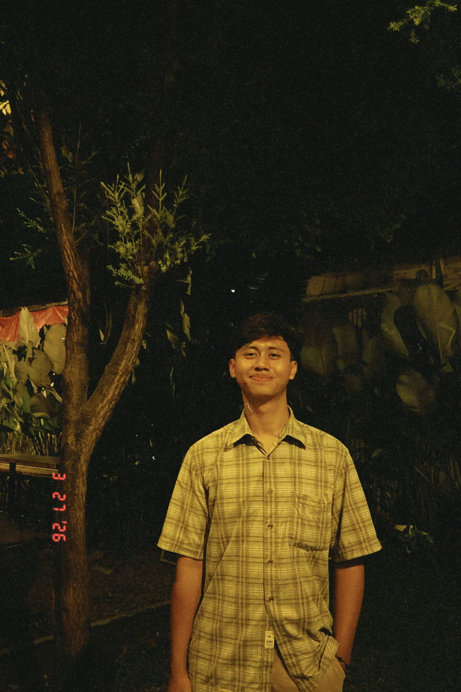

Muhammad Defa Ariandi
251111022
Mahasiswa
Hubungi SayaPengalaman Saya
Pengalaman saya penah bekerja part time menjadi waiters di Ganesha Coffe, memberikan saya pengalaman pertama untuk saya mencari pengalaman baru, Lalu saya bekerja freelance di perusahaan photobooth yang memeberikan saya pengalaman untuk melatih skill publuic speaking dan berani mengampil keputusan ketika ada masalah terhadap kondisi dan juga sistem yang saya gunakan. Saya juga pernah menjalankan atau memegang sistem seperti undangan digital, sistem penerimaan tamu undangan di acara wedding lebih praktis dan cepan untuk penerimaan tamu undangnnya, Terus sekarang saya magang juga di perusahaan LMS scola menajadi Data Entry yang dimana disini saya belajar untuk teliti dan juga harus bisa bekerja sama tim. Tidak hanya itu saya juga di ajarkan untuk menjadi leader yang bertanggung jawab dan juga bisa mengambil keputusan yang bijak untuk tim saya juga tegas untuk suatu kendala yang ada agar bisa mendapatkan problem solving yang
Tentang Saya
Saya adalah mahasiswa Universitas Widyatama, Fakultas Teknik, Jurusan Sistem Informasi. Saya tertarik dengan dunia teknologi, terutama dalam pembuatan website, pemrograman, dan pengembangan sistem informasi. Sebagai mahasiswa, saya masih terus belajar dan mengembangkan kemampuan saya di bidang teknologi informasi. Saya juga senang mencoba hal-hal baru, menambah pengalaman, dan mengasah keterampilan melalui tugas kuliah maupun proyek yang saya kerjakan. Melalui portofolio ini, saya ingin menampilkan beberapa hasil karya dan proyek yang pernah saya buat selama kuliah. Saya berharap bisa terus belajar, meningkatkan kemampuan, dan mendapatkan pengalaman baru yang berguna untuk masa depan.
Portofolio Saya
Proyek yang saya jadikan pegalaman adalah aplikasi quickwas app, Yaitu sistem layanan cuci sepatu untuk memudahkan customer di mulai dari mahasiswa sampai masyarakat umum, website ini saya buat bersama kelompok/tim saya di kampus agar bisa mengembangkan skill dan juga bisa untuk melakin kerja tim, seperti melatih komunikasi dan peka terhadap apa yang harus cepat di selesaikan dalam pekerjaan tim.
Kontak Saya
email: defa.ariandi@widyatama.ac.id
Kontak: 0822-1886-7729
Sosmed: @mhmmddefaard